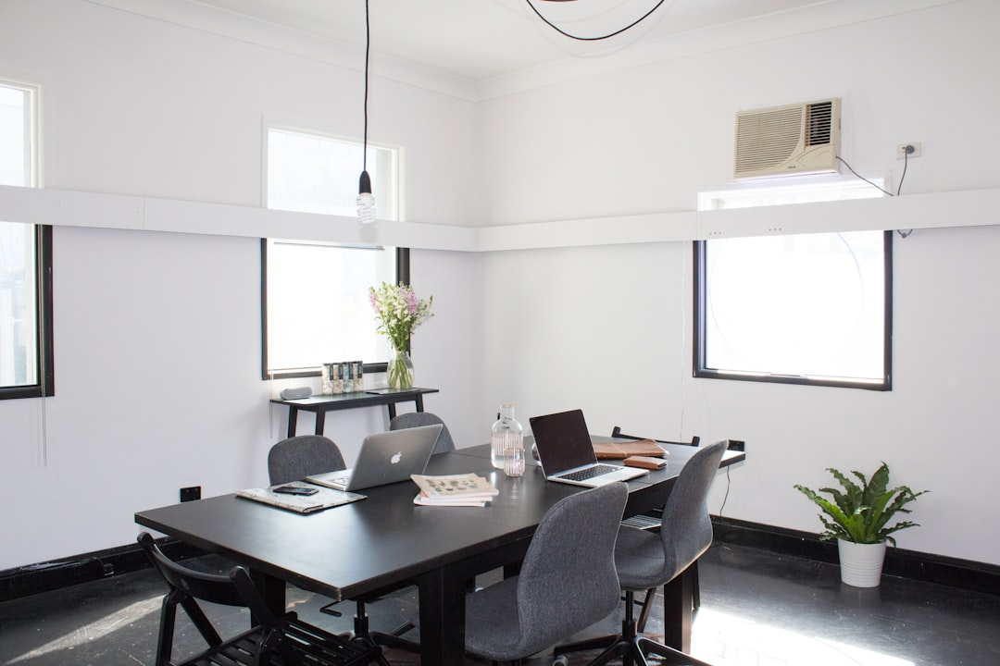

Come Risparmiare Ore Preziose su Canva: La Rivoluzione SocialEngine AI per Social Media Manager e PMI

Come SocialEngine AI Trasforma le Ore Perse su Canva in Caroselli LinkedIn e Instagram Produttivi
- Molte PMI, Social Media Manager e Creator perdono tempo prezioso creando grafiche manualmente su Canva.
- La scarsa costanza e la complessità tecnica compromettono l’engagement e la crescita social.
- SocialEngine AI genera caroselli persuasivi in 40 secondi, estraendo palette dal sito e impaginando testi efficaci, ottimizzando produttività e presenza online.
Analisi Approfondita della Notizia e delle Implicazioni Operative
Nel panorama digitale competitivo di oggi, i Social Media Manager, i consulenti digitali, i creator e le piccole e medie imprese (PMI) si confrontano quotidianamente con la sfida di mantenere una presenza social costante e di qualità. La notizia emergente è chiara: ore alte al giorno vengono spese sulla piattaforma Canva o strumenti simili per creare grafiche e post, in particolare caroselli per LinkedIn e Instagram, formati chiave per il content marketing.
Questo processo manuale, seppur popolare, si rivela spesso inefficiente e dispendioso in termini di tempo. La necessità di ricerca di palette coerenti con il brand, di scrittura e impaginazione del copy persuasivo e di adattamenti grafici, rallenta l’operatività e limita la frequenza di pubblicazione, elemento cruciale per l’engagement sui social.
Da un punto di vista operativo, incide anche la capacità di rispettare i tempi e le scadenze di contenuti programmati: le lunghe sessioni di lavoro si traducono spesso in post saltati o pubblicazioni con poca qualità visiva e testuale, danneggiando la percezione del brand e la fidelizzazione del pubblico.
Le Conseguenze e i Costi di Non Agire
L’inerzia tecnica e strategica nel processo di creazione dei contenuti social genera costi tangibili e intangibili per le aziende e i professionisti del settore. Innanzitutto le ore perse su Canva – moltiplicate per settimane e mesi – rappresentano un investimento elevato in termini di risorse umane e produttività persa, risorse che potrebbero essere dedicate ad attività strategiche quali analisi dei dati, community management o sviluppo di strategie per campagne a pagamento.
In secondo luogo, la scarsa costanza nella pubblicazione determina una presenza frammentata e poco riconoscibile su LinkedIn e Instagram, dove la frequenza e la regolarità sono fattori essenziali per aumentare la visibilità organica. I post sporadici e poco curati influenzano negativamente l’engagement, la crescita degli follower e, in ultima analisi, il ROI delle attività di digital marketing.
Questo scenario porta molti Social Media Manager e PMI a una condizione di frustrazione operativa, con processi manuali ripetitivi e poco scalabili che impediscono di sfruttare appieno il potenziale dei social media come canale di business e sviluppo del brand.
Come SocialEngine AI Risolve il Problema
SocialEngine AI si propone come soluzione innovativa e tecnologicamente all’avanguardia per superare questi ostacoli operativi. Si tratta di un sistema SaaS pensato specificamente per Social Media Manager, consulenti, creator e PMI che desiderano ottimizzare la creazione dei contenuti grafici senza compromettere la qualità.
Il cuore della sua innovazione risiede nella capacità di generare automaticamente caroselli di 5 slide ottimizzati per LinkedIn e Instagram in soli 40 secondi. SocialEngine AI estrae in modo intelligente la palette cromatica dal sito web del cliente, assicurando coerenza visiva immediata con il brand, eliminando quindi la necessità di ricerca e abbinamento manuale dei colori.
Parallelamente, impagina un copy persuasivo e professionale, adattato al contesto e agli obiettivi di comunicazione, evitandoti lunghe sessioni di scrittura o l’intervento di copywriter esterni. La combinazione di questi elementi consente di produrre contenuti dall’aspetto professionale e coinvolgente in modo semplice, rapido e replicabile.
SocialEngine AI offre due soluzioni di ingresso: lo Starter Pack a €29 per 10 caroselli, ideale per testare la piattaforma e iniziare a ridurre il tempo perso in produzione, e il Pro Pack a €79 per 35 post, perfetto per chi ha bisogno di una produzione regolare e in quantità più elevata, con un risparmio significativo di ore uomo.
| Gestione Tradizionale | Con SocialEngine AI |
|---|---|
| Ore multiple spese quotidianamente su Canva per creare grafiche e post. | Generazione autonoma di caroselli in 40 secondi, riducendo drasticamente i tempi. |
| Ricerca manuale di palette colore e branding per ogni post. | Palette estratta automaticamente dal sito web, garantendo coerenza visiva. |
| Copy scritto manualmente, spesso senza efficacia persuasiva e vendita. | Copy impaginato e ottimizzato per engagement e conversione integrato nel carosello. |
| Pubblicazioni irregolari, con bassa frequenza e qualità variabile. | Costanza nella pubblicazione garantita grazie alla velocità e semplicità di produzione. |
| Dipendenza da competenze tecniche ed esperienza nella grafica e copywriting. | Interfaccia semplice, pensata per tutti i livelli, senza necessità di competenze avanzate. |
💡 Ti è stato utile questo approfondimento?
Condividilo con un collega o un amico del settore Social Media Manager, Consulenti, Creator e PMI a cui potrebbe interessare!
FAQ - Domande Frequenti su SocialEngine AI per Professionisti del Settore
1. Quanto è semplice utilizzare SocialEngine AI senza esperienza tecnica?
SocialEngine AI è progettato con un’interfaccia intuitiva e guidata che non richiede competenze grafiche o di copywriting avanzate, perfetto per PMI e professionisti singoli.
2. È possibile personalizzare ulteriormente i caroselli creati?
Sì, dopo la generazione automatica è possibile modificare elementi grafici e testi per rispondere a esigenze specifiche del brand o campagne particolari.
3. Quali sono i vantaggi della connessione tra la palette estratta e il sito web?
L’estrazione automatica della palette assicura coerenza visiva e identità di brand senza errori manuali, aumentando l’efficacia del messaggio e la riconoscibilità del marchio.
Inizia Subito
Starter Pack da €29 per 10 caroselli o Pro Pack a €79 per 35 post.
Fonti Ufficiali e Risorse Esterne
Scopri l'Intelligenza Artificiale per la tua attività
Ottimizza i processi e aumenta le vendite con le soluzioni B2B di RM Studio.
Scopri SocialEngine AI